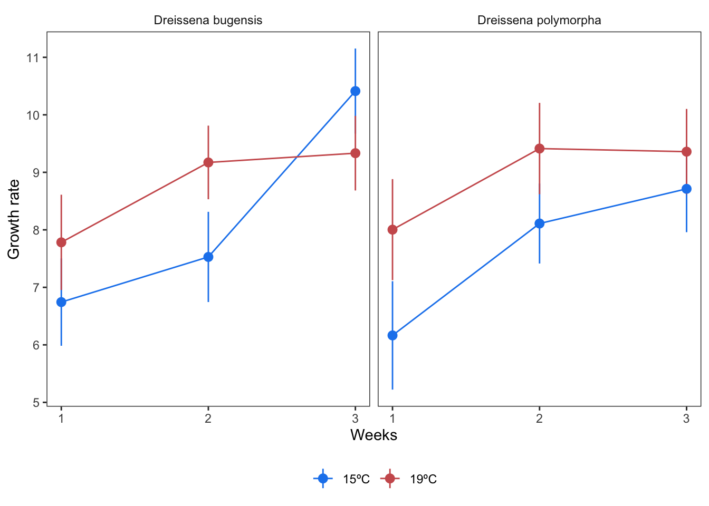
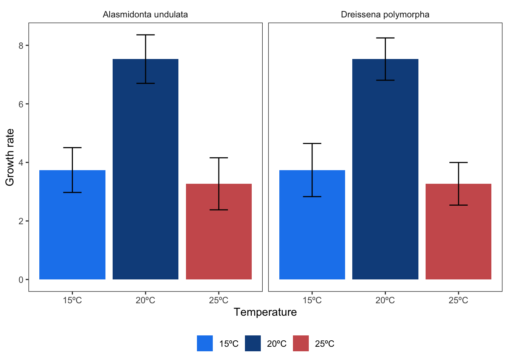

Universal extraction challenges
There are a suite of challenges, regardless of effect size type, that challenge accurate and robust meta-analysis. We’ll discuss some of them here. Note that many of our examples pertain especially to the ecology and evolution literature yet we suspect they are pervasive and widespread.
Sample size
Sample size can be devilishly tricky to extract from author text. Yet sample size is essential to accurately calculating effect size point estimates and sampling variance. As we review elsewhere, sample size is necessary to convert author-reported estimates of standard error or confidence intervals to standard deviation—a key summary statistic for SMD and lnRoM effect sizes.
Sample size also introduces questions about comparability between studies. For example, imagine you are meta-analyzing the effects of some treatment (say logging) on ungulate abundance. Some studies did spotlight surveys from a vehicle (where the unit of replication would probably be the number of survey nights or survey kilometers) while other studies did camera trapping (where the sample size would be number of camera trap nights or number of camera trap locations).
Are these two sample sizes comparable? We don’t know. There are likely way more camera trap nights than spotlight surveys yet the camera traps only cover a small field of view (but for many nights) while the spotlight surveys could cover dozens of kilometers (but over fewer nights). We believe it is worth recording the different dimensions of sample size in your meta-analysis dataset, and to conduct sensitivity analyses to ensure that your results are robust to these sources of methodological heterogeneity.
ImportantSummaries of clustered, non-independent data
Imagine if a study reported \(mean±sd\) across 3 individuals measured 5 times per treatment. The resulting sample size is 15 per treatment but the replicates are not fully independent. However, a different study might measure 15 separate individuals a single time, leading also to a sample size of 15 per treatment. The first summary contains a mixture of more and less independent data while the second summary is summarized across a similar level of independence.
As such, you will notice that some articles summarize data (e.g., calculate means±sd) across spatial dimensions (e.g., independent plots or sites or individuals); some summarize data over time points within each spatially independent sample (plots or individuals); and others will summarize data over both spatial and temporal dimensions.
These differences likely matter, especially in ecological data, yet are rarely addressed. We recommend recording whether data-reported summaries are across time, across spatially-independent samples (or individuals), or across both. These factors may explain methodological heterogeneity in your dataset and should form the basis for sensitivity analyses.
An alternative is to use effective sample size instead of author-reported sample size (after converting author-reported standard error or confidence intervals to standard deviation) or a conservative sample size. For example, in the study with 3 individuals measured 5 times, you could convert author-reported standard error to standard deviation using an n of 15 but then use an n of 3 to calculate your effect size (Noble et al. 2017).
IF THIS IS THE CASE, CAN YOU USE NUMBER OF METERS AS EFFECTIVE N???? (SEE BELOW on SCALE)
See Noble et al. (2017) for further discussion of this approach and Rutkowska et al. (2014) for an example meta-analysis.
CHECK THIS
Unit of replication
The unit of replication of a statistic are the entities across which summaries were calculated With lnOR and lnRR type effect sizes, the unit of replication is generally straightforward: the number of individuals, plots, or sites across which a discrete outcome was measured.
In correlational effect sizes (Zr), the unit of replication is usually the number of measurements, unless the data presents data summarized into means±sd per value of a continuous predictor variable (see here for how to resolve these).
In SMD-type effect sizes, the unit of replication will be whatever are summarized into a central tendency and measurement of error. While the unit of replication for SMD-type effect sizes might be straightforward with behavioral or physiological data—where the unit of replication is generally the number of individuals—survey or plot data adds increasing complexity. For example, if you are meta-analyzing vegetation data you may find studies that make their plots the unit of replication (pooling data from subplots) while others make subplots the unit of replication.
For these reasons, we recommend recording the unit of replication (e.g., individual, plot, subplot, survey) in your dataset. This information can be used for sensitivity analyses and subgroup analyses.
ImportantUnit of replication mismatches
You will likely find that different studies in your meta-analytic dataset use different units of replication to answer the same question. If your dataset is large, this heterogeneity is likely of little importance. However, if your dataset is small, these differences in unit of replication are liable to bias your model estimates.
For example, if authors provide \(mean±sd\) of survivorship of individuals across sites, the unit of replication for the raw mean±sd is number of sites. However, imagine other studies in your dataset report data for which the unit of replication is individuals. The studies that report unit of replication at the individual level will likely have much higher sample size than the study that reports data at the site level—and will thus have more influence in your models, even if they ultimately were more comprehensive and thorough in their research.
There are dark magic techniques—with their own assumptions—for reconstructing the underlying data in these cases. These techniques involve drawing simulated data from the original data generating process. See examples for SMD-type effect sizes, lnOR effect sizes, Zr effect sizes, and for non-Gaussian responses.
Measurement scale
Another issue that haunts some meta-analyses—at least in ecology—is plot size (Spake et al. 2021). For an equal effort, studies with larger plots (e.g., 100 m2) will have a smaller sample size than studies with small plots (e.g., 10 m2). Likewise, some studies will not use areal plots at all but will instead use transects (e.g., of 100 m in length). These differences in scale are also ecological—many ecological processes are scale dependent: a negative relationship at plot scales can translate to positive effects at landscape scales. Likewise, a process that increases heterogeneity at local scales can reduce heterogeneity at broader scales (Ferraro and Lienau 2025; Wiens 1989).
There is currently no statistical solution for these scale challenges in meta-analysis (Spake et al. 2021). For that reason, we recommend digitizing plot-size when conducting a meta-analysis on vegetation or other scale-variable data, which can be used as a moderator or for subsetting your dataset. You’ll also notice, if thinking about this problem, that measurement scale does not operate alone but in interaction with the size of the organisms in question: a 100 m2 plot in a grassland is very different than a 100 m2 plot in an old growth forest.
Given that scale is both biologically and statistically profound, we recommend digitizing measurement scale for explicit analysis. Note that doing so is not always fruitful (e.g., (Lundgren et al. 2024)), perhaps because it is difficult to account for plant size.
NoteRemote sensing analyses
One issue that we do not know how to deal with are estimates made from remote sensing data, which is increasingly relevant in ecology as space-based data become more common-place. However, what is the sample size in a pixel-based analysis? The number of pixels? If so, then the sample size could be in the millions. Are these pixels true replicates? As a continuous field of measurement, they instead appear to approximate a scale-dependent estimate of ‘truth’.
Finally, remote sensing analyses generally derive from publicly available data products, that form the basis for multiple studies—adding another level of non-independence that may be absent from the rest of your meta-analytic dataset.
For these reasons, we are not sure remote sensing based analyses should be meta-analyzed—or at least we don’t think they should be lumped with effect sizes generated from field data.
Complex non-independence structures
One of the many challenges in extracting data for meta-analysis is that studies often report multiple measurements of the same phenomena, e.g., through time or from independent plots. These situations must be controlled for with random effects—or with clear and transparent rules on how to choose which data to extract.
Let’s link to good papers and tutorials: Noble et al. (2017)
Repeated measurements
Time series random effects are fairly straightforward to implement in the primary frequentist package for meta-analytic models (metafor and rma.mv, Viechtbauer (2010)). Controlling for them requires creating a time series column with a simple numeric value that describes temporal ordering of measurements (e.g., 1, 2, 3, 4). An additional column should provide a grouping variable.
To illustrate, let’s imagine we are assessing the influence of temperature on the growth rates of clams. A study reports an experimental trial for two species (zebra mussels and quagga mussels), each through time. The control is ambient conditions while the treatment is elevated temperature. These are moderators we are explicitly interested in. Imagine the results of this study look like this:
In this case, you have two independent species and three dependent time points per species. We would most likely extract all of the data from both panels of this figure, and produce a table like this. Note that we recommend extracting data in a wide format, so that each paired value (control and treatment per species and time point) is clearly associated, allowing for easy effect size calculation.
| article_id | fig | species | experiment_id | time_sequence | temperature_low | temperature_high | mean_low | sd_low | n_low | mean_high | sd_high | n_high |
|---|---|---|---|---|---|---|---|---|---|---|---|---|
| article_1 | fig 1 | Dreissena bugensis | Dreissena bugensis experiment | 1 | 15ºC | 19ºC | 6.743541 | 0.7595526 | 15 | 7.782568 | 0.8282550 | 15 |
| article_1 | fig 1 | Dreissena bugensis | Dreissena bugensis experiment | 2 | 15ºC | 19ºC | 7.528880 | 0.7843098 | 15 | 9.172034 | 0.6401673 | 15 |
| article_1 | fig 1 | Dreissena bugensis | Dreissena bugensis experiment | 3 | 15ºC | 19ºC | 10.413201 | 0.7396445 | 15 | 9.333162 | 0.6487298 | 15 |
| article_1 | fig 1 | Dreissena polymorpha | Dreissena polymorpha experiment | 1 | 15ºC | 19ºC | 6.164313 | 0.9423077 | 15 | 8.003368 | 0.8785558 | 15 |
| article_1 | fig 1 | Dreissena polymorpha | Dreissena polymorpha experiment | 2 | 15ºC | 19ºC | 8.110107 | 0.6955785 | 15 | 9.413595 | 0.7940005 | 15 |
| article_1 | fig 1 | Dreissena polymorpha | Dreissena polymorpha experiment | 3 | 15ºC | 19ºC | 8.712962 | 0.7534038 | 15 | 9.359484 | 0.7430347 | 15 |
Note that we have a column for the article (article_id), a column describing where in the article the data came from (fig), a column recording the species (species), an id for the experiment (which was unique to each species) and the time sequence (time_sequence) within that experiment. The experiment ID might need to be more complex, e.g., if there were several independent experiments crossed with other treatments (e.g., salinity, or independent field sites or trials that are reported separately).
These columns control our non-independence structures within this study. We also have the statistics necessary for our effect size calculations (mean_*, sd_*, n_*) for each temperature treatment. And we have two columns that can be used to construct moderators (temperature_high and temperature_low).
We will show you below how to fit a model on this data.
Multiple comparisons to same control
Let’s imagine the next study in this same meta-analysis has two different temperature treatments compared to the same control, again for two different species. In this case, they do not report repeated measures. Their figure might look like this:

Here we have a different looking plot, with two treatment temperature (20ºC and 25ºC) compared to the same control (15ºC). Again, we have two different species and no repeated measures. We recommend extracting the data to look like this:
| article_id | fig | species | control_id | experiment_id | temperature_low | temperature_high | mean_low | sd_low | n_low | mean_high | sd_high | n_high |
|---|---|---|---|---|---|---|---|---|---|---|---|---|
| article_2 | fig s1 | Alasmidonta undulata | shared_control_Alasmidonta undulata | Alasmidonta undulata experiment | 15ºC | 20ºC | 4.530116 | 0.7994341 | 25 | 5.458801 | 0.7952347 | 25 |
| article_2 | fig s1 | Alasmidonta undulata | shared_control_Alasmidonta undulata | Alasmidonta undulata experiment | 15ºC | 25ºC | 4.530116 | 0.7994341 | 25 | 4.039803 | 0.9853909 | 25 |
| article_2 | fig s1 | Dreissena polymorpha | shared_control_Dreissena polymorpha | Dreissena polymorpha experiment | 15ºC | 20ºC | 3.739187 | 1.0186992 | 25 | 7.469025 | 0.7433303 | 25 |
| article_2 | fig s1 | Dreissena polymorpha | shared_control_Dreissena polymorpha | Dreissena polymorpha experiment | 15ºC | 25ºC | 3.739187 | 1.0186992 | 25 | 2.866959 | 0.8087976 | 25 |
This dataset has a control_id which specifies that these rows share the same control. This can be used in your random effect formulation.
The combined dataset with both studies would look like this. Note that the time_sequence column for the second study is populated with ‘1’, while the control id for the first study is given a unique value per row.
| article_id | fig | species | experiment_id | time_sequence | temperature_low | temperature_high | mean_low | sd_low | n_low | mean_high | sd_high | n_high | control_id |
|---|---|---|---|---|---|---|---|---|---|---|---|---|---|
| article_1 | fig 1 | Dreissena bugensis | Dreissena bugensis experiment | 1 | 15ºC | 19ºC | 6.743541 | 0.7595526 | 15 | 7.782568 | 0.8282550 | 15 | unique_control1 |
| article_1 | fig 1 | Dreissena bugensis | Dreissena bugensis experiment | 2 | 15ºC | 19ºC | 7.528880 | 0.7843098 | 15 | 9.172034 | 0.6401673 | 15 | unique_control2 |
| article_1 | fig 1 | Dreissena bugensis | Dreissena bugensis experiment | 3 | 15ºC | 19ºC | 10.413201 | 0.7396445 | 15 | 9.333162 | 0.6487298 | 15 | unique_control3 |
| article_1 | fig 1 | Dreissena polymorpha | Dreissena polymorpha experiment | 1 | 15ºC | 19ºC | 6.164313 | 0.9423077 | 15 | 8.003368 | 0.8785558 | 15 | unique_control4 |
| article_1 | fig 1 | Dreissena polymorpha | Dreissena polymorpha experiment | 2 | 15ºC | 19ºC | 8.110107 | 0.6955785 | 15 | 9.413595 | 0.7940005 | 15 | unique_control5 |
| article_1 | fig 1 | Dreissena polymorpha | Dreissena polymorpha experiment | 3 | 15ºC | 19ºC | 8.712962 | 0.7534038 | 15 | 9.359484 | 0.7430347 | 15 | unique_control6 |
Tricky business, right?
Now, to demonstrate how we’d control for these non-independence structures, let’s calculate an effect size (SMD) and run a model. Note we have complex non-independence structures here. One of the same species shows up in both studies (so becomes a crossed random effect), we have time sequences nested within an experiment id, and we have a shared control id.
Ultimately, we would also likely want to add a phylogenetic dissimilarity matrix to control for phylogenetic distance between the species. And we should also control for spatial non-independence between studies. But let’s leave that out for now. See Mizuno et al. (2026) for a tutorial on phylogenetic and spatial meta-analytic models and see Nakagawa et al. (2023) for further discussion on controlling for non-independence in meta-analysis.
Note that the struct argument in rma.mv specifies the correlation structure to apply to time series.
library("metafor")
# First calculate effect size:
full_dat <- escalc(measure = "SMD",
m1i = mean_low, m2i = mean_high,
sd1i = sd_low, sd2i = sd_high,
n1i = n_low, n2i = n_high,
data = full_dat) |> setDT()
# Calculate difference in temperature to use as a moderator:
full_dat[, temperature_diff := as.numeric(gsub("ºC", "", temperature_high)) - as.numeric(gsub("ºC", "", temperature_low))]
# Add a unique ID for each effect size:
full_dat[, effect_size_id := 1:.N]
# Model
m <- rma.mv(yi ~ temperature_diff,
V = vi,
random = list(~1 | article_id / control_id / effect_size_id,
~1 | species,
~time_sequence | experiment_id),
dfs = "contain",
test = "t",
method = "ML",
struct = "AR",
data = full_dat)
ImportantCustom effect sizes to reduce nuisance heterogeneity
In the example above, we are forced to use the difference in temperature as a moderator. However, alternatively, we could have calculated Zr, after drawing the underlying data for each temperature treatment with the mean, standard deviation, and sample size. We demonstrate this here.
A third option would have been to use a totally different (and more unusual effect size): Q10. This effect size would have allowed us to capture the temperature difference explicitly, thus yielding simpler models and less overall heterogeneity.
For more discussion of how to accomodate experimental designs (so called nuisance heterogeneity) explicitly into your effect size calculations, instead of into your models see Noble et al. (2022).
Creating a variance-covariance matrix with vcalc
I’m not sure I fully understand when to use vcalc versus just random effects
Complex non-independence structures can also be calculated separately with the function metafor::vcalc.
Use vcalc to control for non-independence structures within studies that may be non-identifiable as a random effect. E.g., if you have 20 studies and 22 cohort IDs within then, you’ll likely never get a good estimate at the cohort_ID level of your random effects. Factoring cohort ID, effect size ID into vcalc can take care of that non-independence without overfitting your model.
See XXXX for a tutorial on how to use vcalc.
As you can see, non-independence structures can be very complex to handle, which can justify simply extracting the final time point from a time series or the time point with the largest difference. This can also justify using a single experimental treatment. These can also be filtered after extraction, if your data is tidy and easy to manage. However, the extra non-independent data may provide within-study and within-subject resolution on moderators that you are explicitly interested.
We recommend the following tutorial on thinking through random effects and using vcalc in meta-analysis: XXXXXX
Database design
As you can see, one of the key considerations in performing a robust and accurate meta-analysis is good database design. Database design depends on your question, whether you plan to extract data for multiple effect size types (e.g., both discrete groups and continuous outcomes), what your rules for repeated measures and shared controls are, and so on.
We recommend that you do a pilot extraction, and analysis, of ~10% of your screened articles before extracting all of your articles. This pilot extraction will give your database a stress test and will help ensure that you are correctly digitizing complex non-independence structures and the covariates that you might be interested in.
References
Ferraro, Kristy M, and Janey R Lienau. 2025. “Of All Shapes and Sizes: A Theoretical Framework for Animal‐mediated Terrestrial Heterogeneity Across Scales.” Ecography (Cop.) 2025 (9): Not Available.
Lundgren, E J, J Bergman, J Trepel, E le Roux, et al. 2024. “Functional Traits—Not Nativeness—Shape the Effects of Large Mammalian Herbivores on Plant Communities.” Science.
Mizuno, Ayumi, Coralie Williams, Malgorzata Lagisz, Alistair M Senior, and Shinichi Nakagawa. 2026. A Unified Framework for Phylogenetic and Spatial Meta-Analysis: Concepts, Implementation, and Practical Guidance.
Nakagawa, Shinichi, Yefeng Yang, Erin L Macartney, Rebecca Spake, and Malgorzata Lagisz. 2023. “Quantitative Evidence Synthesis: A Practical Guide on Meta-Analysis, Meta-Regression, and Publication Bias Tests for Environmental Sciences.” Environ. Evid. 12 (1): 8.
Noble, Daniel W A, Malgorzata Lagisz, Rose E O’dea, and Shinichi Nakagawa. 2017. “Nonindependence and Sensitivity Analyses in Ecological and Evolutionary Meta-Analyses.” Mol. Ecol. 26 (9): 2410–25.
Noble, Daniel W A, Patrice Pottier, Malgorzata Lagisz, et al. 2022. “Meta-Analytic Approaches and Effect Sizes to Account for ’Nuisance Heterogeneity’ in Comparative Physiology.” J. Exp. Biol. 225 (Suppl_1): jeb243225.
Rutkowska, J, A Dubiec, and S Nakagawa. 2014. “All Eggs Are Made Equal: Meta‐analysis of Egg Sexual Size Dimorphism in Birds.” Journal of Evolutionary Biology 27 (1): 153–60.
Spake, Rebecca, Akira S Mori, Michael Beckmann, et al. 2021. “Implications of Scale Dependence for Cross-Study Syntheses of Biodiversity Differences.” Ecol. Lett. 24 (2): 374–90.
Viechtbauer, Wolfgang. 2010. “Conducting Meta-Analyses in R with the metafor Package.” Journal of Statistical Software 36 (3): 1–48.
Wiens, J A. 1989. “Spatial Scaling in Ecology.” Funct. Ecol. 3 (4): 385.